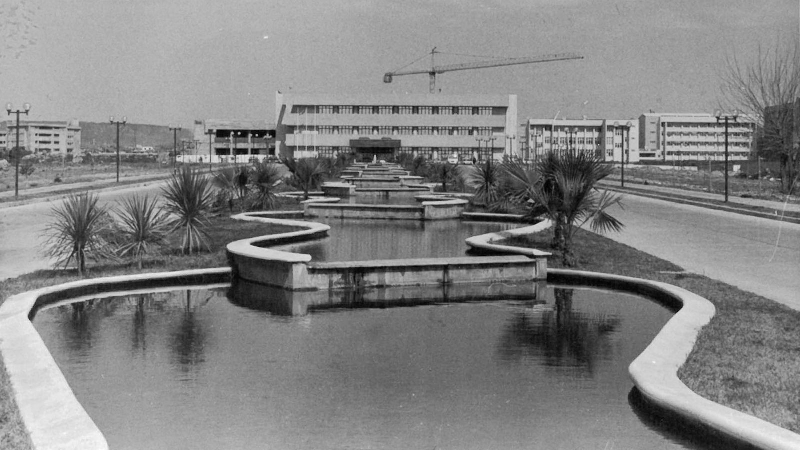
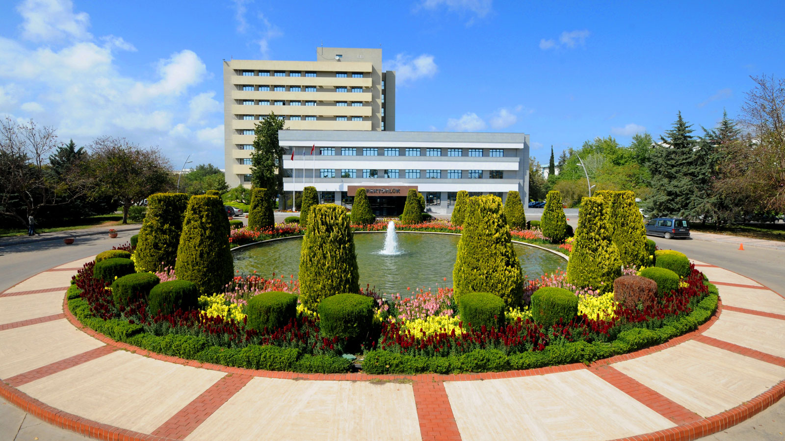

TARİHCEMİZ
Antalya bölgesi ilk çağlardan itibaren önemli medeniyetlerin kurulduğu bir merkez konumundadır. Toprakların verimli olması aynı zamanda bir liman kenti de olması bu yöreyi her zaman cazip kılmıştır. Cumhuriyet’in ilanından sonra da Antalya’nın bu önemi devam etmiştir. Bu dönemde hızla gelişen turizm, ülkemizi olumlu yönde etkilemiştir. Bu ortamda Antalya kültürel ve tarihi değerleriyle fark edilmeye başlanmış, Antalya ve çevresi bir turizm bölgesi olarak görülür olmuştur. 1970’li yıllarda doğal ve kültürel özellikleriyle tanınan bir kent olan Antalya’da ziraatçılık da iyi denilecek bir noktadadır. Bütün bu olumlu gelişmelerin yanında Antalya’nın bir üniversiteye ihtiyacı bulunmaktaydı.
Antalya’da Ankara Üniversitesi’ne bağlı olarak bir Tıp Fakültesi kurulmasına ilişkin ilk girişimlerin ardından Akdeniz Üniversitesi’nin ilk nüvesini teşkil edecek Antalya Tıp Fakültesi’nin kurulması Ankara Üniversitesi Senatosu’nun 9 Ocak 1973 Tarihli ve 5470 sayılı kararıyla uygun bulunmuş ve bu karar Milli Eğitim Bakanlığı tarafından onaylanmıştır. Böylece mülga 4936 sayılı Üniversiteler Kanunu’nun 2. maddesi gereğince Ankara Üniversitesi’ne bağlı olarak Antalya Tıp Fakültesi kurulmuştur.

Daha sonra Antalya’da Akdeniz Üniversitesi’nin kuruluşunu hızlandırmak için 3 Şubat 1973 tarihinde ‘Antalya Akdeniz Üniversitesinin Kuruluşuna Yardım ve Destekleme Vakfı’ kurulmuş, Antalya’ya yeni fakülteler kazandırarak Akdeniz Üniversitesi kuruluş çalışmalarına başlanmıştır.
Akdeniz Üniversitesi’nin Kurulması
Akdeniz Üniversitesi 20 Temmuz 1982 Yükseköğretim Kurumları Teşkilatının 2547 sayılı Yükseköğretim Kanunu’nun geçici 28. maddesi uyarınca yeniden düzenlenmesi bağlamında Bakanlar Kurulunca 22 Haziran 1982 tarihinde kararlaştırılan kararnamenin yürürlüğe girmesiyle birlikte kurulmuştur.

25 Temmuz 1982 tarih ve 17762 sayılı Resmi Gazete’de yayınlanan 21 Temmuz 1982 tarih ve 82/20 sayılı atama kararının ikinci fıkrası gereğince de Akdeniz Üniversitesi Rektörlüğü’ne Ankara İktisadi ve Ticari İlimler Akademisi Maliye Fakültesi Dekanlığı görevinde bulunan Prof. Dr. Necat Tüzün atanmıştır.

Bu kararname ile Türkiye de 27 üniversite kurulmuş Yükseköğretim Kurumları Teşkilatı hakkındaki 41 sayılı Kanun Hükmünde Kararnamenin 28 Mart 1983 tarihinde kabul edilerek 30 Mart 1983 tarihli Resmi Gazete’de yayınlanmasıyla Akdeniz Üniversitesi’nin resmen kuruluşu da gerçekleşmiştir. Bu Kanunun 23. maddesine göre de Akdeniz Üniversitesine bağlı Ziraat Fakültesi ve Fen Edebiyat Fakültesi kurulmuş, Antalya Tıp Fakültesi Akdeniz Üniversitesi’ne bağlanmıştır.
Yine rektörlüğe bağlı olarak Sosyal bilimler Enstitüsü, Fen Bilimleri Enstitüsü ve Sağlık Bilimleri Enstitüsü, Turizm İşletmeciliği ve Otelcilik Yüksekokulu kurulmuş ve Isparta Mühendislik Fakültesi (fakülteye bağlı yüksekokullar), Burdur Eğitim Yüksekokulu, Antalya Meslek Yüksekokulu Akdeniz Üniversitesi’ne bağlanmıştır.
Akdeniz Üniversitesi’nin kurulması, Rektörün atanması gelişmelerinden sonra üniversitemiz bundan böyle Akdeniz Üniversitesi adıyla çalışmalarına başlamıştır. Bu durum Antalya açısından bir dönüm noktası olmuştur. Zira artık bir üniversiteye sahip kent görünümünü kazanmış böylece kentimiz eğitim sağlık kültür ve iktisadi açıdan bir hamle yapabilecek düzeye gelme şansını yakalamıştır.
Sürekli gelişen ve büyüyen Akdeniz Üniversitesi, Isparta’daki birimlerini 1992 yılında Süleyman Demirel Üniversitesi’ne, Burdur’daki birimlerini 2006 yılında Mehmet Akif Ersoy Üniversitesi’ne, Alanya’daki birimlerini ise 2015 yılında kurulan Alanya Alaaddin Keykubat Üniversitesi’ne devrederek yakın bölgelerle yeni üniversitelerin kurulmasına vesile olmuştur. 2020 yılı itibarıyla ana yerleşkesi Dumlupınar Bulvarı ile Uncalı semti arasında yer alan bölgede bulunan Akdeniz Üniversitesi, merkez yerleşke 3.483.589m2 arazi yüzölçümü ve 615.105m2 yapı alanına sahiptir. Tüm yerleşkelerin toplamında 681.598 m2 kapalı alan bulunmaktadır. Akdeniz Üniversitesi halen 25 Fakülte, 7 Enstitü, 1 Yüksekokul, 1 Konservatuar, 12 Meslek Yüksekokulu ve 51 araştırma ve uygulama merkezinde eğitim, araştırma ve topluma hizmet noktasında faaliyetlerine devam etmektedir.
Kurulduğu günden bugüne köklü geçmişi, bilgisi, deneyimi kurumsallığı ile ülkemizin en önemli eğitim kurumlarından birisi haline gelen Akdeniz Üniversitesi, evrensel düzeyde eğitim-öğretim ve bilimsel üretim yapma, bilginin teknolojiye dönüşümüne katkı sağlama, toplumun bilgi, teknoloji, sanat, kültür ve diğer alanlardaki gereksinimlerini üst düzeyde karşılama misyonunu 43 yıldır başarıyla sürdürmektedir.

